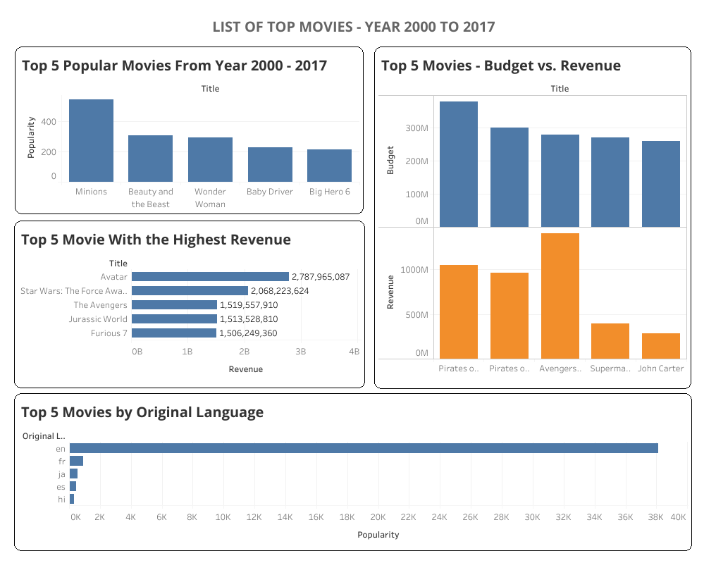

Technical Stack
table_chart
Excel
terminal
Python
robot_2
VBA Automation
Project Focus
Automating monthly variance analysis and stakeholder reporting workflows to improve financial accuracy and reporting speed.
Financial Reporting
Monthly Business Performance
A structured report pack featuring Month-over-Month (MoM) variance analysis, trend commentary, and automated data processing for stakeholder communication.
Core Deliverables
Variance Analysis
Detailed breakdown of budget vs. actuals with automated commentary generation.
Workflow Automation
Python scripts for ETL processes, reducing manual data entry by 70%.
Trend Commentary
Predictive modeling for next-month performance based on historical MoM trends.
Impact & Outcomes
Reporting Efficiency
Reporting cycle reduced from 3 days to 4 hours through Python-based automation.
Stakeholder Clarity
Stakeholders received cleaner, more actionable insights with standardized visual reporting.